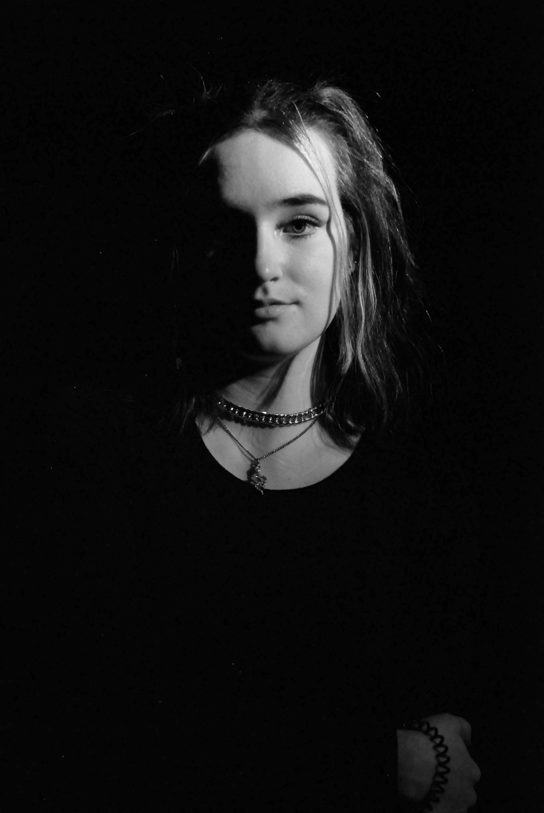
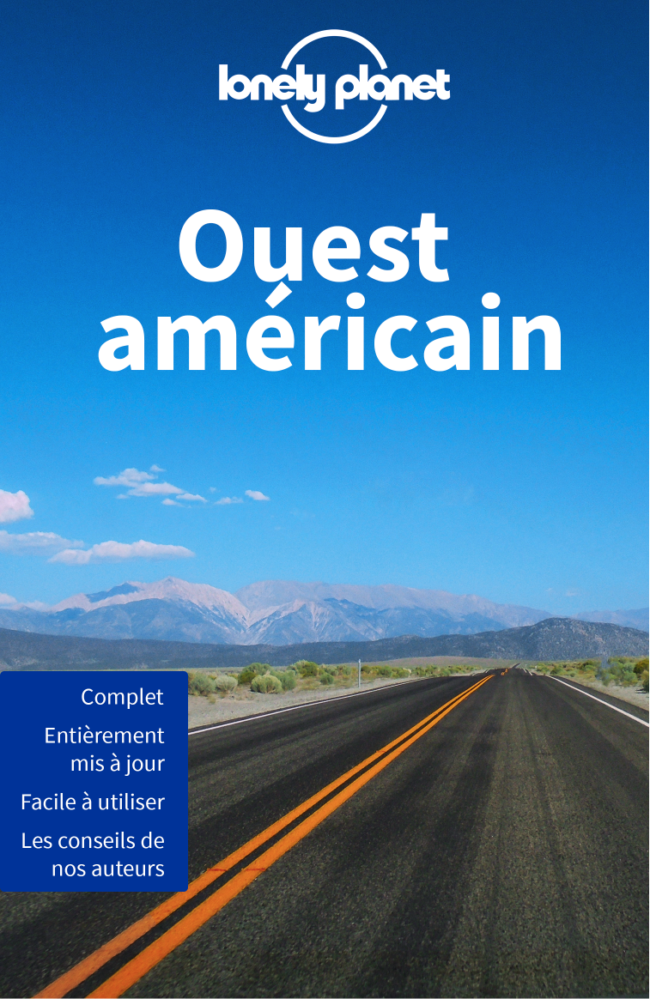
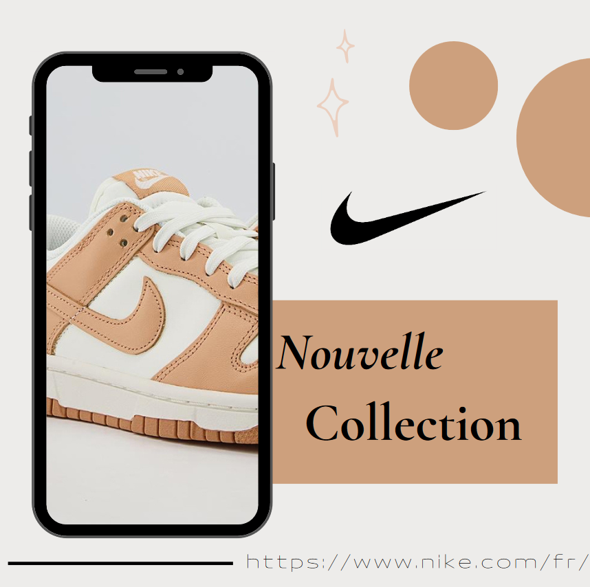
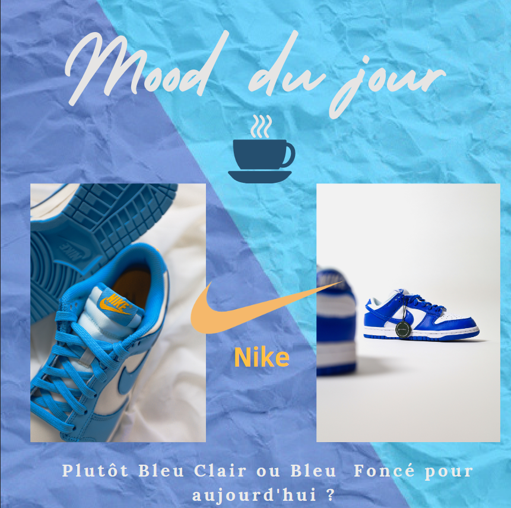

Après un DUT Information-Communication, je suis à la recherche d'une alternance de 12 mois pour poursuivre mon cursus en intégrant un Bachelor 3 en Relations publiques et événementiel à l'Ecole Supérieure de Publicité (ESP). Organisée, persévérante et motivée, j'aime la découverte de nouvelles expériences !
Mes réalisations et projets
Projet photographie
Photographie en lowkey, une technique qui contient principalement des tons et des couleurs sombres, réalisé avec un appareil photo dans le cadre d'un projet pour mon DUT

Projet pub
Réalisation d'une affiche Lonely Planet sur l'OUEST AMÉRICAIN sur le logiciel Photoshop dans le cadre de cours sur Photoshop

Veille
Dossier de Veille sur Starbucks réalisé dans le cadre de cours du DUT
On prépare doucement la nouvelle collection chez Nike et quoi de mieux que des tons café-crème pour démarrer en douceur😁
Voici un petit aperçu très rapide d’une nouvelle paire de Dunk Low ✨
Restez connecté et rendez-vous très vite pour le dévoilement de cette nouvelle collection 👌
#Nike #nouvelleco #sportswear

Nike2
Pour commencer et égayer votre journée, vous êtes plutôt de la team Nike Bleu Clair ou bien plutôt Bleu Foncé 😏 ?
N’hésitez pas à nous le dire en commentaire on veut tout savoir !
Psst : les paires sont disponibles sur notre site web : nike.com/fr/
#Nike #mood #teambleuclair #teambleufoncé

Nike3
Tu veux commencer une pratique sportive mais ne sais pas trop comment t’y prendre ? 🧐
Nike te propose quelques conseils qui pourront t’être utile pour débuter 😉
Fait défiler le carrousel pour tout découvrir et partage nous en commentaire ton ou tes expériences !
N’hésite pas à partager le post également autour de toi ✨
#Nike #sport #conseils
Mon premier montage vidéo que j'ai pu faire lors d'un projet pour mon DUT.
Vidéo essayant de retranscrire ma vision du skate, passion que j'ai pu découvrir avec mon copain :)
Mini film de fiction que j'ai pu faire pour un projet lors de mon DUT. Réalisé avec Adobe Premiere Pro
C'est un projet de groupe dans lequel on s'est beaucoup investi, racontant l'histoire étrange
d'une jeune fille faisant un rêve dans lequel elle doit jouer pour survivre...
Lien de la vidéo en haute résolution: https://youtu.be/oIdsjbXa70M
Moodboard
Moodboard
Moodboard casual blanc pour une collection de vêtement. Travail effectué sur Photoshop dans le cadre de mes études à ESP.(Projet ESP)